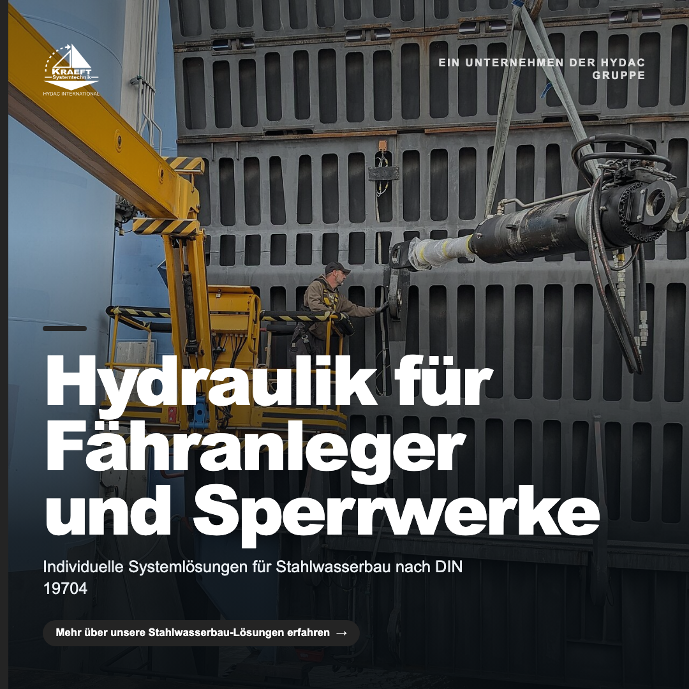
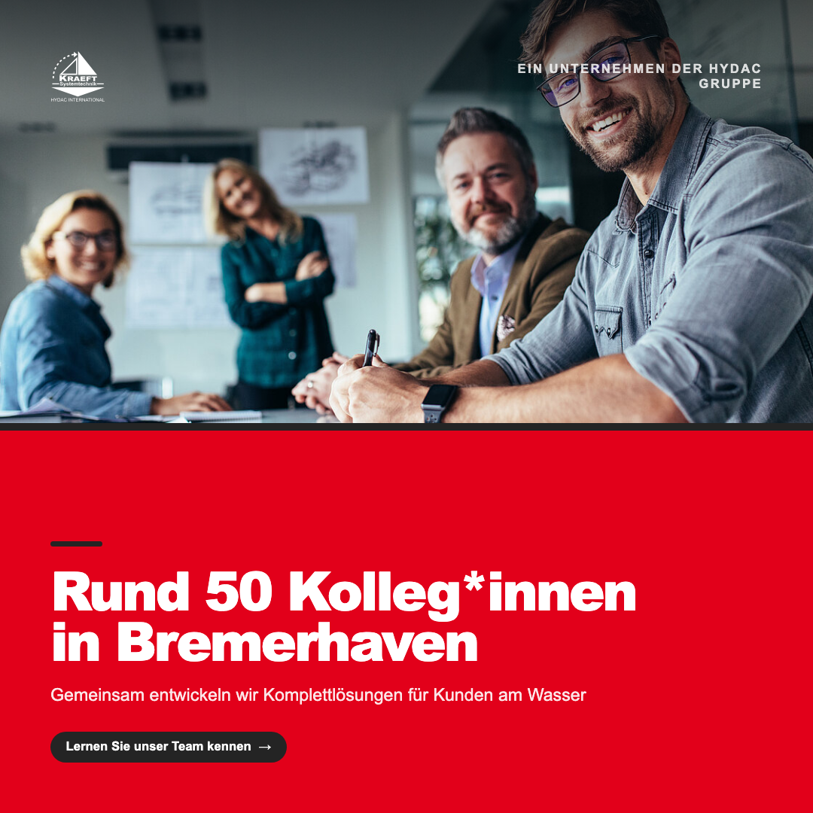
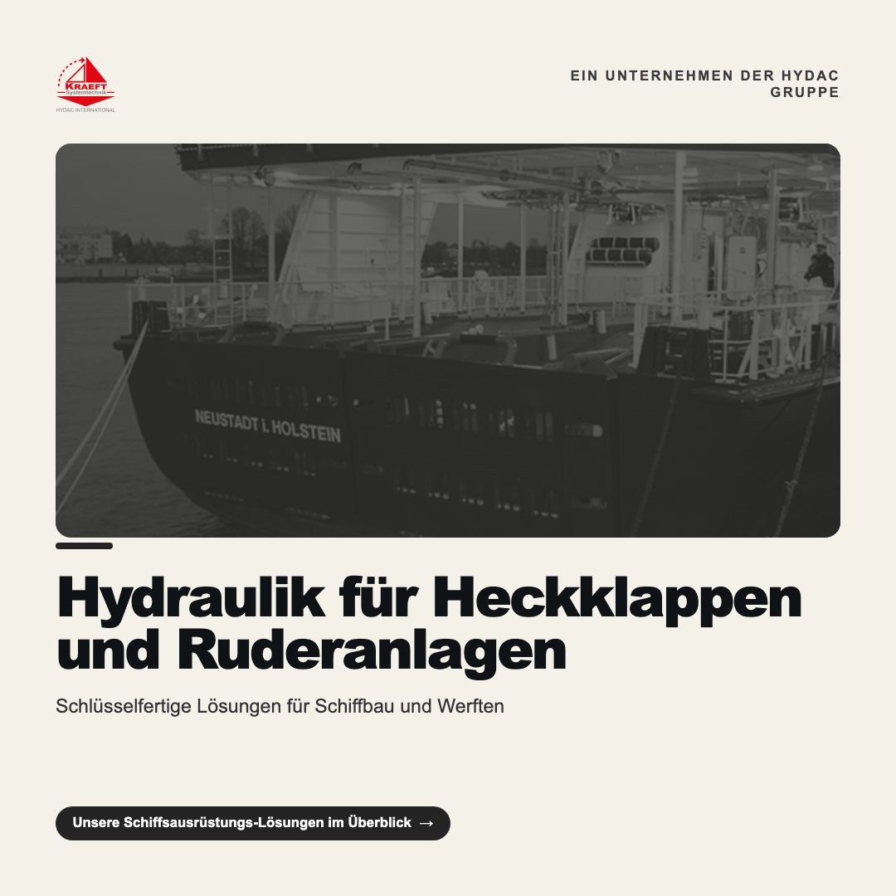

MARKETS
EDITION 08 · 2026
KRAEFT GmbH
Systemtechnik
Wie KRAEFT Systemtechnik als HYDAC-Kompetenzzentrum digitale Sichtbarkeit aufbaut und Vertrauen bei B2B-Entscheidern gewinnt.
![KRAEFT GmbH Systemtechnik]()
Wo KRAEFT GmbH Systemtechnik
heute steht
Bestandsaufnahme von Marke, Kanälen und bisheriger Kommunikation — ehrlich und ohne Schönfärberei.
Wo KRAEFT GmbH Systemtechnik heute steht
Stärken treffen Chancen
- —Kompetenzzentrum der HYDAC-Gruppe für Stahlwasserbau und küstennahe Hydraulik
- —Kompetenz in Stahlwasserbau und Schiffsausrüstung seit 1975 belegt
- —Turnkey-Lösungen von Planung bis Service und Wartung aus einer Hand
- —Zertifiziert nach ISO 9001, ISO 50001 und FGMA-Überwachungszeichen
- —Von der Website aus kein Social-Media-Profil verlinkt oder auffindbar
- —Open-Graph-Tags fehlen auf allen Seiten vollständig
- —Keine FAQ-Antwortformate für KI-gestützte Suchsysteme vorhanden
- —Nur 65 Prozent der Bilder besitzen Alt-Texte
- —LinkedIn-Aufbau kann Vertrauen bei B2B-Entscheidern deutlich stärken
- —FAQ-Inhalte können Sichtbarkeit in KI-Suchantworten erhöhen
- —Instagram kann Arbeitgebermarke am Standort Bremerhaven sichtbar machen
- —Vollständige OG-Tags können Klickrate bei Social-Shares verbessern
- —Risiko, dass Wettbewerber digital deutlich sichtbarer auftreten
- —Risiko, dass Fachkräfte ohne Online-Präsenz schwerer erreichbar sind
- —Risiko, dass KI-Suchsysteme mangels Antwortformaten nicht zitieren
Klare Ziele,
klare Kennzahlen
Vier priorisierte Ziele, abgeleitet aus dem Status quo — jedes mit Kennzahlen, an denen sich Erfolg messen lässt.
Vier Ziele, die aufeinander einzahlen
LinkedIn als Leitkanal etablieren, um Fachautorität zu zeigen und qualifizierte Anfragen aus Stahlwasserbau und Schiffbau vorzubereiten.
Rolle als Kompetenzzentrum für Stahlwasserbau und küstennahe Hydraulik der HYDAC-Gruppe sichtbar in sozialen Medien verankern.
Einblicke in Team und Arbeitsalltag am Standort Bremerhaven zeigen, um Fachkräfte für KRAEFT zu gewinnen.
Regelmäßige Bespielung von LinkedIn, Instagram und Facebook etablieren, da aktuell keine Profile von der Website verlinkt sind.
Drei Kanäle,
klare Rollen
LinkedIn, Instagram und Facebook — jeder mit eigener Aufgabe, Zielgruppe und Tonalität, aber einer gemeinsamen Story.
Jeder Kanal mit eigener Aufgabe
Einmal produzieren, dreimal erzählen
Ein Fachthema – etwa die Zertifizierung nach ISO 9001 und ISO 50001 – wird je Kanal passend übersetzt: sachlich-fachlich auf LinkedIn, bildstark auf Instagram, kompakt auf Facebook.
KRAEFT ist nach ISO 9001 und ISO 50001 zertifiziert – Qualität, die Kunden im Stahlwasserbau verlässlich schätzen.
Blick hinter die Kulissen: Zertifizierte Qualität entsteht bei uns in Bremerhaven, Tag für Tag.
Qualität mit Zertifikat: ISO 9001 und ISO 50001 bestätigen unseren Anspruch an Ihre Projekte.
Fünf Content-
Pillars
Ein System aus Themensäulen — damit jeder Beitrag ein Ziel hat und die Marke über Zeit ein klares Profil bekommt.
Fünf Säulen, ein Profil
Erklärungsbedürftige Hydrauliklösungen für Stahlwasserbau, Schiffbau und Rohrfertigung verständlich und fachlich präzise vermitteln, um Vertrauen bei technischen Entscheidern aufzubauen.
Das Leistungsspektrum entlang konkreter Nutzenversprechen darstellen statt reiner Aufzählung.
Werte und Qualitätsversprechen mit belegbaren Zertifizierungen und Unternehmensgeschichte unterlegen.
Mitarbeitende und authentische Einblicke zeigen, um die Marke nahbar zu machen und Recruiting zu unterstützen.
Nur belegte Kennzahlen und überprüfbare Entwicklungen kommunizieren, um Glaubwürdigkeit ohne unbelegte Superlative zu schaffen.
Von der Säule zum Beitrag
Vom Plan
zum Beitrag
Ein konkreter Redaktionsplan über vier Wochen — mit realistischer Frequenz, Formatmix und ausgewogenen Contentschwerpunkten.
Redaktionsplan · Woche 1 & 2
Redaktionsplan · Woche 3 & 4
Zwölf Posts,
kein Copy-Paste
Vier Beiträge je Kanal — kanalgerecht in Tonalität, Format und CTA, als fertige KI-Motive im 4-Wochen-Kalender. Anschließend drei davon als Mockup im KRAEFT GmbH Systemtechnik-Branding.
Zwölf Motive, ein Fahrplan

Fachwissen & Problemlösung
Stahlwasserbau-Anlagen stellen hohe Anforderungen an Zuverlässigkeit und Präzision. KRAEFT entwickelt individuelle hydraulische Systemlösungen für Fähranleger, RoRo-Brücken, Klappbrücken, Schleusen und Sperrwerke – in Anlehnung an DIN 19704. Unser Leistungsspektrum reicht von Engineering und Aggregatebau über Verrohrung und Hydraulikzylinder bis zu Service und Wartung. So begleiten wir Betreiber und Planer von Wasserbauanlagen von der ersten Planung bis zur Inbetriebnahme – mit dokumentierter Qualität und langfristiger Verfügbarkeit der Anlagen.
#Stahlwasserbau #Hydrauliksysteme #Wasserbau #Ingenieurbau


Menschen & Unternehmenskultur

kraeft_gmbh_systemtechnik Individuelle Komplettlösungen entstehen nicht am Reißbrett allein – sondern im Team. Am Standort Bremerhaven arbeiten rund 50 engagierte Kolleginnen und Kollegen an hydraulischen Systemlösungen für Kunden am und im Wasser. Jeder Handgriff zählt, jedes Projekt ist individuell.

Leistungen & Kundennutzen
Ob Zentralhydraulik, Ruderanlage oder Heckklappe: KRAEFT liefert schlüsselfertige hydraulische Lösungen für Schiffbau und Werften – von der Planung bis zur Ablieferung. Sicher, effizient und maßgeschneidert für jedes Projekt.

Von der Idee
zur Umsetzung
Was wir empfehlen — und wie eine Zusammenarbeit konkret abläuft, Schritt für Schritt.
Vier Empfehlungen auf den Punkt
Fachautorität durch regelmäßige Beiträge zu Projekten, Zertifizierungen und Technik aufbauen, um B2B-Entscheider gezielt zu erreichen.
Zitierfähige Frage-Antwort-Formate zu Leistungen wie Stahlwasserbau und Rohrfertigung schaffen, um in KI-Suchantworten präsent zu sein.
Titel, Beschreibung und Bild je Seite hinterlegen, damit Social-Media-Beiträge mit ansprechender Vorschau verlinkt werden können.
Fehlende Alt-Texte bei rund einem Drittel der Bilder ergänzen, um Barrierefreiheit und Bildersuche zu verbessern.
So arbeiten wir zusammen
Ziele, Tonalität und Themen gemeinsam schärfen.
Monatlicher Contentplan je Kanal und Pillar.
Text, Grafik & Video — im Branding des Kunden.
Kurze Freigabeschleife — Sie behalten die Kontrolle.
Ausspielung, Monitoring und Antworten.
Kennzahlen auswerten — und zurück zu Schritt 1.
Was Umsetzung kostet
Marketingkonzept, 9 Posts, Flyer, Print-Vorlagen, Visitenkarten, private Landingpage & SEO/GEO-Check — in 24 h.
Sprechen wir über
Ihre Sichtbarkeit.
Ein unverbindliches Erstgespräch genügt, um zu sehen, was für KRAEFT GmbH Systemtechnik realistisch drin ist. Ich freue mich darauf.
MARKETS
![QR-Code]()